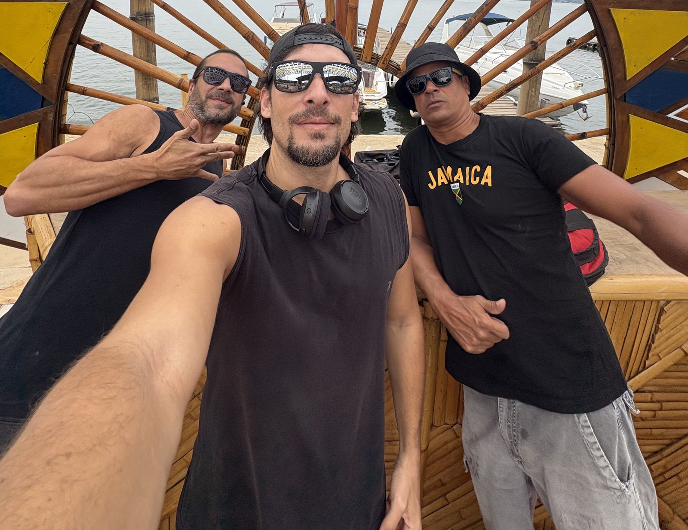
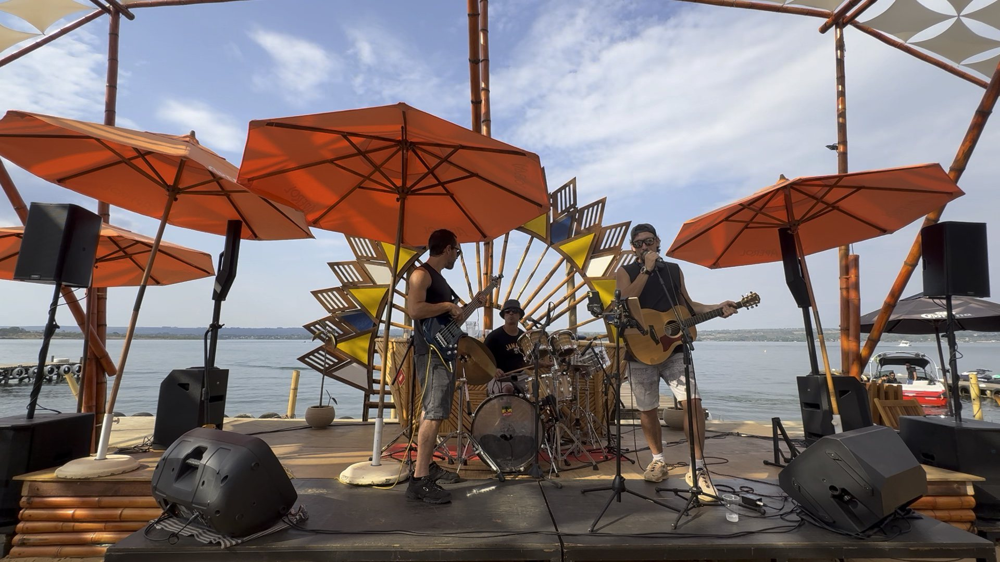

Rafael Z Trio
com Bruno Douradowith Bruno Dourado
Um encontro que virou banda. Reggae, rock, folk e música brasileira, ao vivo.A meeting that became a band. Reggae, rock, folk and Brazilian music, live.
← Voltar ao siteBack to the site
Rafael Z Trio com Bruno DouradoRafael Z Trio with Bruno Dourado" width="1600" height="1234" style="object-position:52% 40%">Sem músicas pra baixo.
Só energia boa.No downbeat songs.
Only good energy.
Rafael Z Trio com Bruno Dourado é um power trio de Brasília que une reggae, rock, folk e música brasileira num show feito para cantar junto, dançar e sair mais leve.Rafael Z Trio com Bruno Dourado is a power trio from Brasília that brings together reggae, rock, folk and Brazilian music in a show made for singing along, dancing and leaving lighter.
Na bateria, na percussão e nos vocais está Bruno Dourado, integrante da formação original do Natiruts, banda nascida em Brasília que ajudou a definir o reggae brasileiro. No baixo, Gustavo Radicchi, parceiro de longa data de Rafael.On drums, percussion and vocals is Bruno Dourado, a member of the original Natiruts line-up, the Brasília band that helped define Brazilian reggae. On bass, Gustavo Radicchi, a long-time partner of Rafael's.
A parceria começou em 2023, num encontro informal em Brasília, e cresceu naturalmente: de voz, violão e percussão para um power trio, com Bruno assumindo a bateria. No palco, as canções autorais de Rafael se misturam a clássicos do reggae e do rock que o público conhece de cor.The collaboration began in 2023, at an informal meeting in Brasília, and grew naturally: from voice, guitar and percussion to a power trio, with Bruno taking over the drums. On stage, Rafael's original songs mix with reggae and rock classics the audience knows by heart.
O power trio
no palco.The power trio
on stage.
Showreel ao vivo, outubro de 2026.Live showreel, October 2026.

O trio no palco à beira do lagoThe trio on the lakeside stage" loading="lazy">
Vamos levar
essa energia
ao seu palco.Let's bring
this energy
to your stage.
Festivais, eventos corporativos, bares, restaurantes e festas privadas.Festivals, corporate events, venues, restaurants and private parties.
- +55 61 98416-7777
- rafaelmartinszeredo@gmail.com
- BaseBased in
- Brasília, DF
- IdiomasLanguages
- Português · English